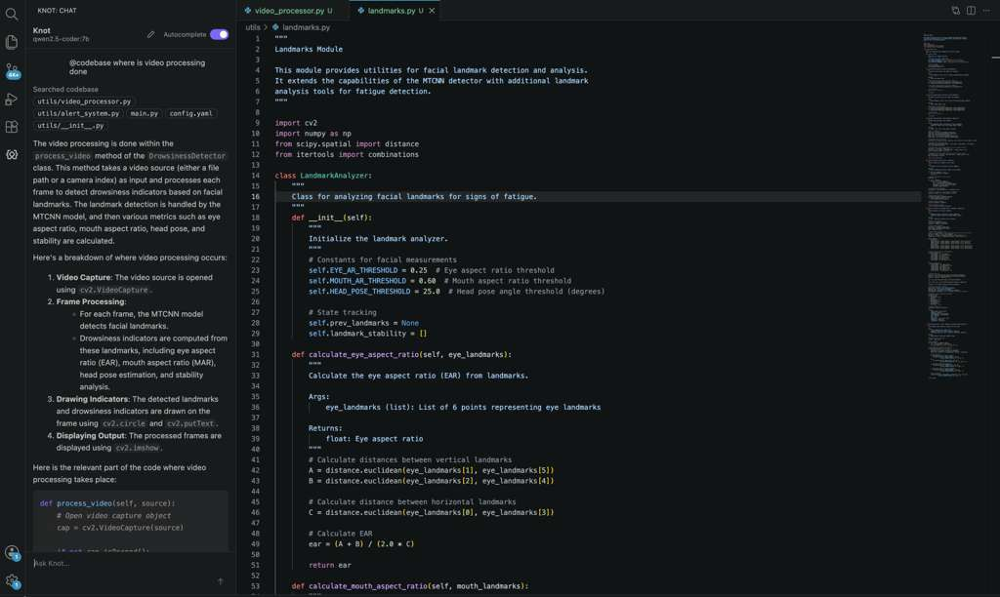
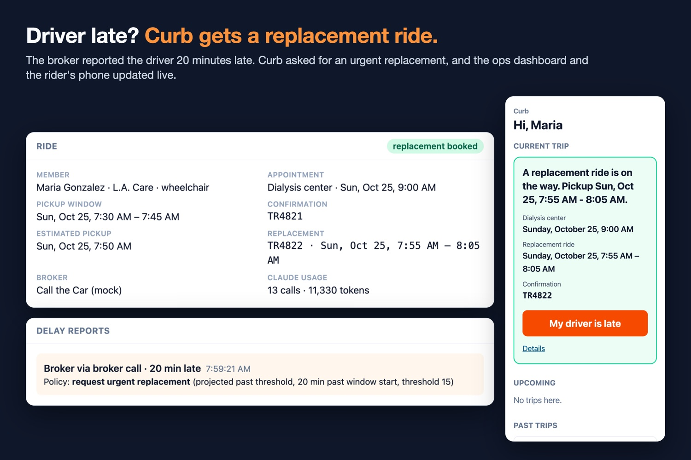
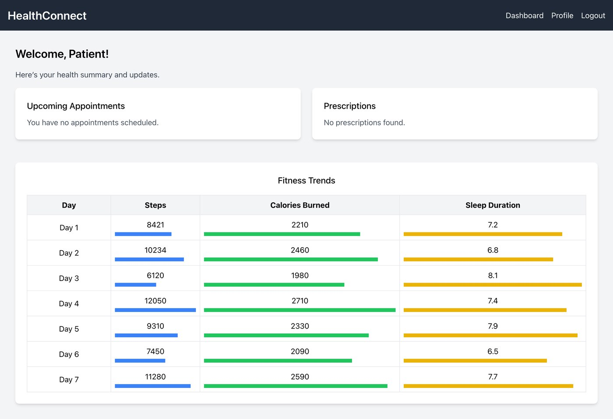

Knot AI
A privacy-first coding assistant that runs on your own device, with no reliance on cloud APIs. Its RAG pipeline grounds answers in your codebase, backed by 130+ automated tests. Built with Shobhit Sinha.

A voice agent that books Medi-Cal rides to medical appointments by phone, and rescues the ride when the driver is late.

Paperwork validity and the late-driver rule are pure functions with unit tests. The model explains the result but never decides it, and nothing is booked until the rider says yes.
A privacy-first coding assistant that runs on your own device, with no reliance on cloud APIs. Its RAG pipeline grounds answers in your codebase, backed by 130+ automated tests. Built with Shobhit Sinha.

Do language models care about truth? We trained probes on embeddings from GPT-2, BLOOM, GPT-Neo, StableLM, and Llama 3 to see whether truth gets encoded, and where. Most probes landed near 50% accuracy, and neither combining layers nor adding noise changed much. Done with Ayush Jain.
A health management platform handling 50M+ records from NHANES and Fitbit, with ETL pipelines, 20+ API endpoints, and a data-driven alert system.

An autonomous vehicle on a Raspberry Pi 4 that takes a description of an object, finds it with YOLOv8, and navigates to it.